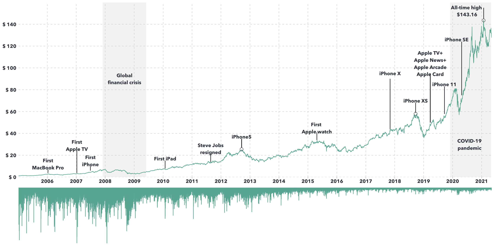

The visualization shows changes in the price and volume of Apple stock between 2005 and 2021. The top line chart represents the price, while the bottom column chart represents the volume. I also included important milestones and historical events that affected the stock.
The dataset comes from The Nasdaq Stock Market.
library(tidyverse)
library(lubridate)
library(cowplot)
text_color = "#353d42"
caption_color = "#666666"
font = "Avenir Next"
aapl <- read.csv("/Users/huvi/Downloads/AAPL.csv")%>%
select(date = Date, price = Open, volume = Volume) %>%
filter(date >= as.Date("2005-01-01")) %>%
mutate(
date = ymd(date)
)
volume <- ggplot(aapl, aes(x = date, y = volume)) +
geom_col(color="#69b3a2")+
scale_x_date(
expand = c(0,0),
breaks = as.Date(c("2006-01-01", "2007-01-01", "2008-01-01", "2009-01-01","2010-01-01","2011-01-01", "2012-01-01","2013-01-01", "2014-01-01","2015-01-01", "2016-01-01", "2017-01-01","2018-01-01", "2019-01-01","2020-01-01","2021-01-01")),
labels = seq(2006,2021, 1),
name = NULL
) +
scale_y_reverse(
expand = c(0,0),
name = NULL
) +
theme(
panel.background = element_blank(),
axis.text.x = element_blank(),
axis.ticks = element_blank(),
axis.text = element_blank()
)
price <- ggplot(aapl, aes(x = date, y = price)) +
#global financial crisis
annotate("rect", xmin = as.Date("2007-12-01"), xmax = as.Date("2009-06-01"), ymin=0, ymax=Inf, alpha=0.2, fill="#cbcbcb") +
annotate(geom="text", x = as.Date("2008-09-01"), y = 90, label = "Global\nfinancial crisis", family = font, color = text_color, fontface = "bold")+
#Covid
annotate("rect", xmin = as.Date("2019-12-01"), xmax = as.Date("2021-05-01"), ymin=0, ymax=Inf, alpha=0.2, fill="#cbcbcb") +
annotate(geom="text", x = as.Date("2020-08-01"), y = 30, label = "COVID-19\npandemic", family = font, color = text_color, fontface = "bold")+
geom_line(color="#69b3a2") +
scale_y_continuous(
expand = c(0,0),
name = NULL,
limits = c(0, 160),
breaks = seq(0,140,20),
labels = paste("$",seq(0,140,20))
) +
scale_x_date(
expand = c(0,0),
breaks = as.Date(c("2006-01-01", "2007-01-01", "2008-01-01", "2009-01-01","2010-01-01","2011-01-01", "2012-01-01","2013-01-01", "2014-01-01","2015-01-01", "2016-01-01", "2017-01-01","2018-01-01", "2019-01-01","2020-01-01","2021-01-01")),
labels = seq(2006,2021, 1),
name = NULL
) +
#10/01/2006: first macbookpro
annotate(geom="text", x = as.Date("2006-01-10"), y = 12, label = "First\nMacBook Pro", family = font, color = text_color, fontface = "bold")+
geom_segment(x = as.Date("2006-01-10"), xend = as.Date("2006-01-10"), y = 4, yend = 7, color = text_color) +
#09/01/2007: first AppleTV
annotate(geom="text", x = as.Date("2007-01-09"), y = 29, label = "First\nApple TV", family = font, color = text_color, fontface = "bold")+
geom_segment(x = as.Date("2007-01-09"), xend = as.Date("2007-01-09"), y = 4, yend = 25, color = text_color) +
#29/06/2007: first iphone
annotate(geom="text", x = as.Date("2007-06-29"), y = 15, label = "First\niPhone", family = font, color = text_color, fontface = "bold")+
geom_segment(x = as.Date("2007-06-29"), xend = as.Date("2007-06-29"), y = 6, yend = 10, color = text_color) +
#27/01/2010: first ipad
annotate(geom="text", x = as.Date("2010-01-27"), y = 17, label = "First iPad", family = font, color = text_color, fontface = "bold")+
geom_segment(x = as.Date("2010-01-27"), xend = as.Date("2010-01-27"), y = 8, yend = 15, color = text_color) +
#24/08/2011: Job resigns
annotate(geom="text", x = as.Date("2011-08-24"), y = 26, label = "Steve Jobs\nresigned", family = font, color = text_color, fontface = "bold")+
geom_segment(x = as.Date("2011-08-24"), xend = as.Date("2011-08-24"), y = 14, yend = 21, color = text_color) +
#12/12/2012: iphone 5
annotate(geom="text", x = as.Date("2012-09-17"), y = 37, label = "iPhone5", family = font, color = text_color, fontface = "bold")+
annotate(geom="point", x=as.Date("2012-09-17"), y = 25.5, size = 3, shape=21, fill="transparent", col = text_color) +
geom_segment(x = as.Date("2012-09-17"), xend = as.Date("2012-09-17"), y = 27, yend = 35, color = text_color) +
#12/12/2012: iphone XS
annotate(geom="text", x = as.Date("2018-09-21"), y = 70, label = "iPhone XS", family = font, color = text_color, fontface = "bold")+
annotate(geom="point", x=as.Date("2018-09-21"), y = 58, size = 3, shape=21, fill="transparent", col = text_color) +
geom_segment(x = as.Date("2018-09-21"), xend = as.Date("2018-09-21"), y = 59, yend = 68, color = text_color) +
#24/04/2015: first apple watch
annotate(geom="text", x = as.Date("2015-04-24"), y = 45, label = "First \nApple watch", family = font, color = text_color, fontface = "bold")+
geom_segment(x = as.Date("2015-04-24"), xend = as.Date("2015-04-24"), y = 34, yend = 41, color = text_color) +
#03/11/2017: iphoneX
annotate(geom="text", x = as.Date("2017-11-03"), y = 95, label = "iPhone X", family = font, color = text_color, fontface = "bold")+
geom_segment(x = as.Date("2017-11-03"), xend = as.Date("2017-11-03"), y = 44, yend = 90, color = text_color) +
#25/03/2019: Apple TV+
annotate(geom="text", x = as.Date("2019-03-25"), y = 104, label = "Apple TV+\nApple News+\nApple Arcade\nApple Card", family = font, color = text_color, fontface = "bold")+
geom_segment(x = as.Date("2019-03-25"), xend = as.Date("2019-03-25"), y = 50, yend = 95, color = text_color) +
#20/09/2019: iphone11
annotate(geom="text", x = as.Date("2019-09-20"), y = 85, label = "iPhone 11", family = font, color = text_color, fontface = "bold")+
geom_segment(x = as.Date("2019-09-20"), xend = as.Date("2019-09-20"), y = 58, yend = 83, color = text_color) +
#24/04/2020: iphonese
annotate(geom="text", x = as.Date("2020-02-20"), y = 126, label = "iPhone SE", family = font, color = text_color, fontface = "bold")+
geom_segment(x = as.Date("2020-04-24"), xend = as.Date("2020-04-24"), y = 75, yend = 124, color = text_color) +
#26/01/2021: all-time high
annotate(geom="text", x = as.Date("2020-7-01"), y = 152.16, label = "All-time high \n$143.16", family = font, color = text_color, fontface = "bold") +
annotate(geom="point", x=as.Date("2021-01-26"), y=143.5, size = 3, shape=21, fill="transparent", col = text_color) +
geom_segment(x = as.Date("2021-01-26"), xend = as.Date("2021-01-26"), y = 145, yend = 155, color = text_color) +
theme(
panel.background = element_blank(),
panel.grid.major = element_line(color = "#cbcbcb", size = 0.3, linetype = "dashed"),
axis.ticks.y = element_blank(),
axis.ticks.x = element_line(color = "#cbcbcb", size = 0.5),
axis.text = element_text(family = font, size = 11, color = text_color, face = "bold")
)
plot_grid(price, volume, nrow = 2, align = c("v"), rel_heights= c(3,1))